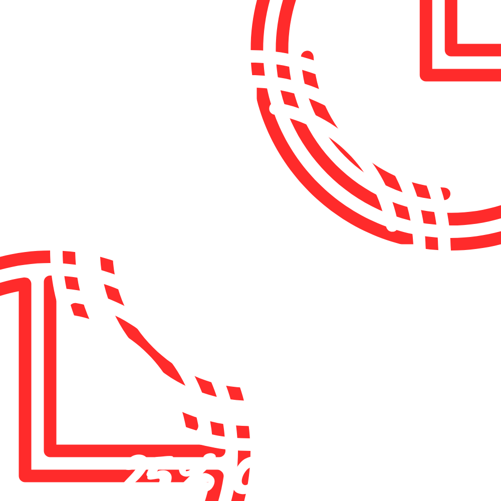
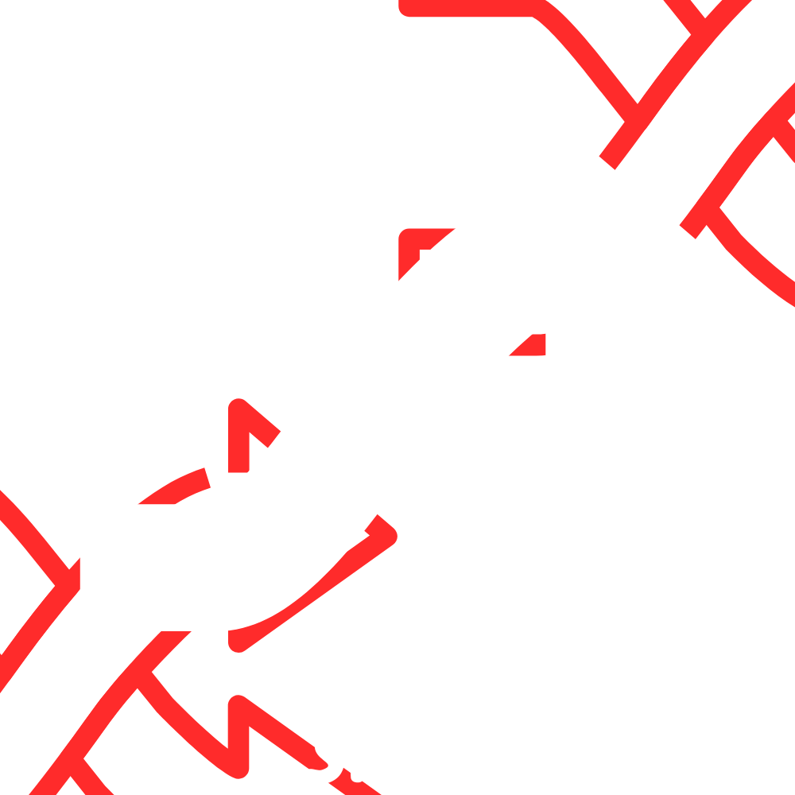
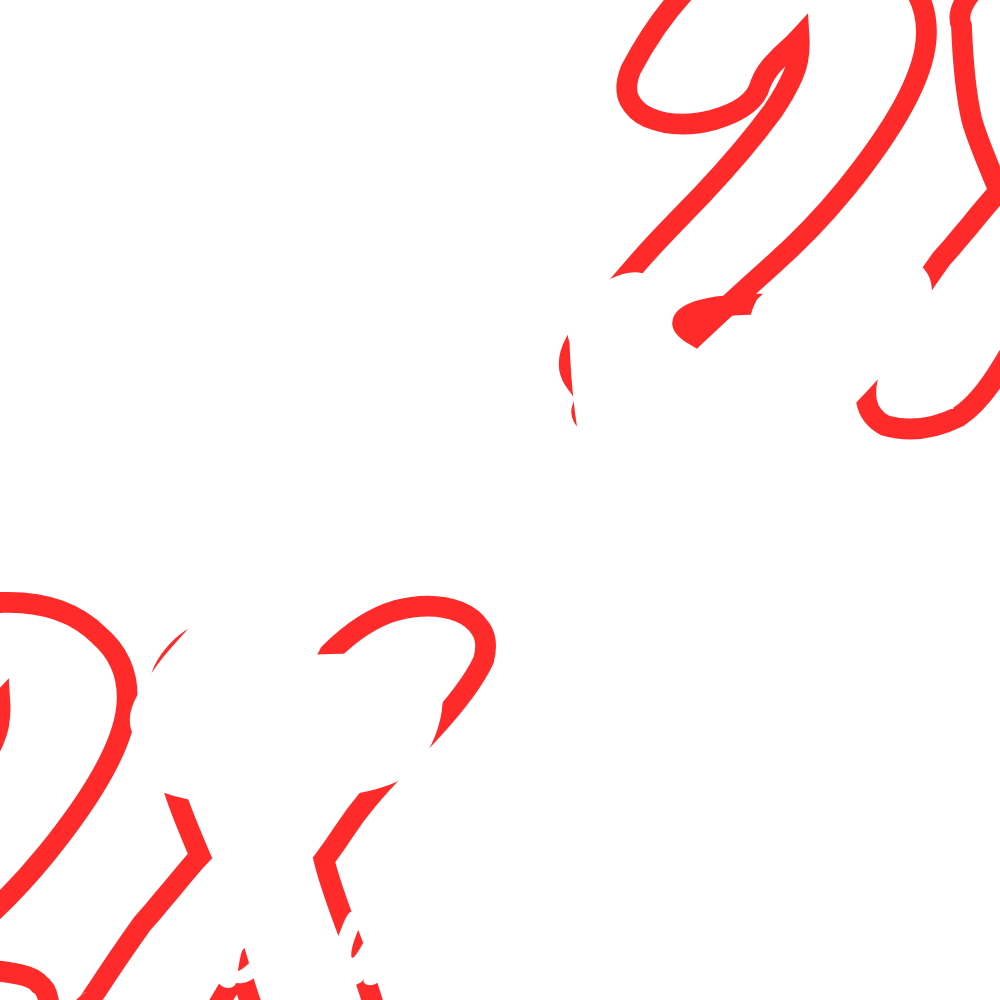
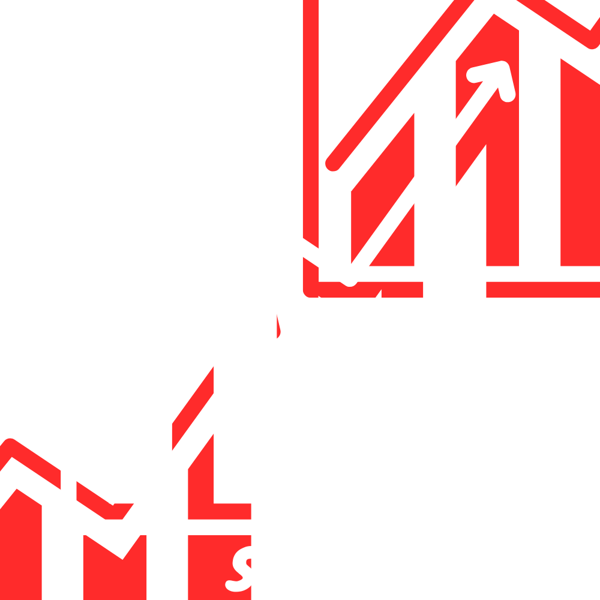

Climb the Charts
Diventa il maestro del Social Memory scalando la classifica degli utenti. Sfida gli iscritti ad una partita testa a testa senza precedenti
Accounting
Accedi al gioco inserendo le tue credenziali User e Password,per la quale è messo a disposizione il recupero. Se invece non sei ancora iscritto passa alla pagina di Sign Up per ottenere il tuo profilo e sarai loggato automaticamente
Il gioco è implementato considerando il monitor come se fosse il tavolo da gioco perciò verrà utilizzato il puntatore del mouse a turno per fare le selezioni. Non appena saranno loggati entrambi i giocatori si aprirà il terreno di gioco e la sfida avrà inizio clickando su 
Una volta dentro alla schermata di gioco sarà comunque possibile resettare gli utenti loggati utilizzando il tasto  ,il quale permette di fare il logout combinato di entrambi i giocatori
Ingame helps
Sono stati aggiunti 3 aiuti rispetto alla versione del memory classico, utilizzabili esclusivamente dal giocatore di turno una sola volta per partita:
25% Choice : dopo aver scoperto una carta, la pressione del tasto  indica quattro caselle contrassegnandole in verde, delle quali una è la compagna della carta scoperta
Swap : dopo aver scoperto una carta, la pressione del tasto  indica due posizioni contrassegnate col colore giallo. La carta precedentemente selezionata viene scambiata di posto con l'altra indicata, permettendo inoltre al giocatore di turno di selezionare nuovamente
la sua prima scelta
Double Turn : prima di scoprire una carta, la pressione del tasto dichiara l'intenzione di svolgere due turni consecutivi. Ciò comporta che
dopo il primo errore, il giocatore di turno rimane sempre lo stesso
Stats Section
Le funzionalità messe a disposizione dall'account permettono tramite l'apposito tasto  di conoscere lo storico delle proprie partite, ricercando anche nel database la cronologia dei match giocati contro l'avversario corrente
Leave the match
Sarà possibile all'interno della partita effettuare il logout attraverso l'apposito tasto  al costo di perdere la stessa
Il gioco mette a disposizione inoltre la possibilità di uscire di comune accordo dalla partita con il tasto